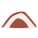

<!doctype html>
<html lang="en">
    <head>
        <meta charset="utf-8">
        <meta http-equiv="X-UA-Compatible" content="IE=edge">
        <meta name="viewport" content="initial-scale=1,user-scalable=no,maximum-scale=1,width=device-width">
        <meta name="mobile-web-app-capable" content="yes">
        <meta name="apple-mobile-web-app-capable" content="yes">
        <link rel="stylesheet" href="css/leaflet.css">
        <link rel="stylesheet" href="css/qgis2web.css"><link rel="stylesheet" href="css/fontawesome-all.min.css">
        <link rel="stylesheet" href="css/leaflet-search.css">
        <link rel="stylesheet" href="css/leaflet-measure.css">
        <style>
        html, body, #map {
            width: 100%;
            height: 100%;
            padding: 0;
            margin: 0;
        }
        </style>
        <title></title>
    </head>
    <body>
        <div id="map">
        </div>
        <script src="js/qgis2web_expressions.js"></script>
        <script src="js/leaflet.js"></script>
        <script src="js/leaflet.rotatedMarker.js"></script>
        <script src="js/leaflet.pattern.js"></script>
        <script src="js/leaflet-hash.js"></script>
        <script src="js/Autolinker.min.js"></script>
        <script src="js/rbush.min.js"></script>
        <script src="js/labelgun.min.js"></script>
        <script src="js/labels.js"></script>
        <script src="js/leaflet-measure.js"></script>
        <script src="js/leaflet-search.js"></script>
        <script src="data/Export_Output_2_1.js"></script>
        <script>
        var highlightLayer;
        function highlightFeature(e) {
            highlightLayer = e.target;
            highlightLayer.openPopup();
        }
        var map = L.map('map', {
            zoomControl:true, maxZoom:28, minZoom:1
        }).fitBounds([[21.352687999015888,39.74723934166901],[21.473532482240014,39.96452827298795]]);
        var hash = new L.Hash(map);
        map.attributionControl.setPrefix('<a href="https://github.com/tomchadwin/qgis2web" target="_blank">qgis2web</a> &middot; <a href="https://leafletjs.com" title="A JS library for interactive maps">Leaflet</a> &middot; <a href="https://qgis.org">QGIS</a>');
        var autolinker = new Autolinker({truncate: {length: 30, location: 'smart'}});
        var measureControl = new L.Control.Measure({
            position: 'topleft',
            primaryLengthUnit: 'meters',
            secondaryLengthUnit: 'kilometers',
            primaryAreaUnit: 'sqmeters',
            secondaryAreaUnit: 'hectares'
        });
        measureControl.addTo(map);
        document.getElementsByClassName('leaflet-control-measure-toggle')[0]
        .innerHTML = '';
        document.getElementsByClassName('leaflet-control-measure-toggle')[0]
        .className += ' fas fa-ruler';
        var bounds_group = new L.featureGroup([]);
        function setBounds() {
        }
        map.createPane('pane_OSMStandard_0');
        map.getPane('pane_OSMStandard_0').style.zIndex = 400;
        var layer_OSMStandard_0 = L.tileLayer('http://tile.openstreetmap.org/{z}/{x}/{y}.png', {
            pane: 'pane_OSMStandard_0',
            opacity: 1.0,
            attribution: '<a href="https://www.openstreetmap.org/copyright">© OpenStreetMap contributors, CC-BY-SA</a>',
            minZoom: 1,
            maxZoom: 28,
            minNativeZoom: 0,
            maxNativeZoom: 19
        });
        layer_OSMStandard_0;
        map.addLayer(layer_OSMStandard_0);
        function pop_Export_Output_2_1(feature, layer) {
            layer.on({
                mouseout: function(e) {
                    if (typeof layer.closePopup == 'function') {
                        layer.closePopup();
                    } else {
                        layer.eachLayer(function(feature){
                            feature.closePopup()
                        });
                    }
                },
                mouseover: highlightFeature,
            });
            var popupContent = '<table>\
                    <tr>\
                        <td colspan="2">' + (feature.properties['OBJECTID'] !== null ? autolinker.link(feature.properties['OBJECTID'].toLocaleString()) : '') + '</td>\
                    </tr>\
                    <tr>\
                        <th scope="row">location</th>\
                        <td>' + (feature.properties['location'] !== null ? autolinker.link(feature.properties['location'].toLocaleString()) : '') + '</td>\
                    </tr>\
                    <tr>\
                        <td colspan="2">' + (feature.properties['x'] !== null ? autolinker.link(feature.properties['x'].toLocaleString()) : '') + '</td>\
                    </tr>\
                    <tr>\
                        <td colspan="2">' + (feature.properties['y'] !== null ? autolinker.link(feature.properties['y'].toLocaleString()) : '') + '</td>\
                    </tr>\
                    <tr>\
                        <th scope="row">Field4</th>\
                        <td>' + (feature.properties['Field4'] !== null ? autolinker.link(feature.properties['Field4'].toLocaleString()) : '') + '</td>\
                    </tr>\
                    <tr>\
                        <th scope="row">التصن</th>\
                        <td>' + (feature.properties['التصن'] !== null ? autolinker.link(feature.properties['التصن'].toLocaleString()) : '') + '</td>\
                    </tr>\
                    <tr>\
                        <th scope="row">TIPE</th>\
                        <td>' + (feature.properties['TIPE'] !== null ? autolinker.link(feature.properties['TIPE'].toLocaleString()) : '') + '</td>\
                    </tr>\
                    <tr>\
                        <td colspan="2">' + (feature.properties['id'] !== null ? autolinker.link(feature.properties['id'].toLocaleString()) : '') + '</td>\
                    </tr>\
                    <tr>\
                        <td colspan="2">' + (feature.properties['Transparen'] !== null ? autolinker.link(feature.properties['Transparen'].toLocaleString()) : '') + '</td>\
                    </tr>\
                </table>';
            layer.bindPopup(popupContent, {maxHeight: 400});
        }

        function style_Export_Output_2_1_0(feature) {
            switch(String(feature.properties['TIPE'])) {
                case 'أخرى':
                    return {
                pane: 'pane_Export_Output_2_1',
                radius: 0.0,
                opacity: 1,
                color: 'rgba(35,35,35,0.0)',
                dashArray: '',
                lineCap: 'butt',
                lineJoin: 'miter',
                weight: 1,
                fill: true,
                fillOpacity: 1,
                fillColor: 'rgba(195,15,239,0.0)',
                interactive: true,
            }
                    break;
                case 'حدود الحرم':
                    return {
                pane: 'pane_Export_Output_2_1',
                radius: 0.0,
                opacity: 1,
                color: 'rgba(35,35,35,0.0)',
                dashArray: '',
                lineCap: 'butt',
                lineJoin: 'miter',
                weight: 1,
                fill: true,
                fillOpacity: 1,
                fillColor: 'rgba(146,209,78,0.0)',
                interactive: true,
            }
                    break;
                case 'متحف':
                    return {
                pane: 'pane_Export_Output_2_1',
        rotationAngle: 0.0,
        rotationOrigin: 'center center',
        icon: L.icon({
            iconUrl: 'markers/tourist_art_gallery.svg',
            iconSize: [31.919999999999998, 31.919999999999998]
        }),
                interactive: true,
            }
                    break;
                case 'مساجد اثري':
                    return {
                pane: 'pane_Export_Output_2_1',
        rotationAngle: 0.0,
        rotationOrigin: 'center center',
        icon: L.icon({
            iconUrl: 'markers/amenity=place_of_worship.svg',
            iconSize: [31.919999999999998, 31.919999999999998]
        }),
                interactive: true,
            }
                    break;
                case 'معالم أثري':
                    return {
                pane: 'pane_Export_Output_2_1',
        rotationAngle: 0.0,
        rotationOrigin: 'center center',
        icon: L.icon({
            iconUrl: 'markers/tourist_museum.svg',
            iconSize: [31.919999999999998, 31.919999999999998]
        }),
                interactive: true,
            }
                    break;
                case 'معالم ديني':
                    return {
                pane: 'pane_Export_Output_2_1',
        rotationAngle: 0.0,
        rotationOrigin: 'center center',
        icon: L.icon({
            iconUrl: 'markers/place_of_worship_islamic3.svg',
            iconSize: [31.919999999999998, 31.919999999999998]
        }),
                interactive: true,
            }
                    break;
                case 'مقابر':
                    return {
                pane: 'pane_Export_Output_2_1',
        rotationAngle: 0.0,
        rotationOrigin: 'center center',
        icon: L.icon({
            iconUrl: 'markers/tourist_memorial.svg',
            iconSize: [31.919999999999998, 31.919999999999998]
        }),
                interactive: true,
            }
                    break;
                default:
                    return {
                pane: 'pane_Export_Output_2_1',
                shape: 'diamond',
                radius: 12.0,
                opacity: 1,
                color: 'rgba(50,87,128,1.0)',
                dashArray: '',
                lineCap: 'butt',
                lineJoin: 'miter',
                weight: 2.0,
                fill: true,
                fillOpacity: 1,
                fillColor: 'rgba(72,123,182,1.0)',
                interactive: true,
            }
                    break;
                case 'معالم طبيع':
                    return {
                pane: 'pane_Export_Output_2_1',
        rotationAngle: 0.0,
        rotationOrigin: 'center center',
        icon: L.icon({
            iconUrl: 'markers/poi_cave.svg',
            iconSize: [31.919999999999998, 31.919999999999998]
        }),
                interactive: true,
            }
                    break;
            }
        }
        map.createPane('pane_Export_Output_2_1');
        map.getPane('pane_Export_Output_2_1').style.zIndex = 401;
        map.getPane('pane_Export_Output_2_1').style['mix-blend-mode'] = 'normal';
        var layer_Export_Output_2_1 = new L.geoJson(json_Export_Output_2_1, {
            attribution: '',
            interactive: true,
            dataVar: 'json_Export_Output_2_1',
            layerName: 'layer_Export_Output_2_1',
            pane: 'pane_Export_Output_2_1',
            onEachFeature: pop_Export_Output_2_1,
            pointToLayer: function (feature, latlng) {
                var context = {
                    feature: feature,
                    variables: {}
                };
                return L.marker(latlng, style_Export_Output_2_1_0(feature));
            },
        });
        bounds_group.addLayer(layer_Export_Output_2_1);
        map.addLayer(layer_Export_Output_2_1);
        var baseMaps = {};
        L.control.layers(baseMaps,{'Export_Output_2<br /><table><tr><td style="text-align: center;"></td><td>أخرى</td></tr><tr><td style="text-align: center;"></td><td>حدود الحرم</td></tr><tr><td style="text-align: center;"></td><td>متحف</td></tr><tr><td style="text-align: center;"></td><td>مساجد اثري</td></tr><tr><td style="text-align: center;"></td><td>معالم أثري</td></tr><tr><td style="text-align: center;"></td><td>معالم ديني</td></tr><tr><td style="text-align: center;"></td><td>مقابر</td></tr><tr><td style="text-align: center;"></td><td></td></tr><tr><td style="text-align: center;"></td><td>معالم طبيع</td></tr></table>': layer_Export_Output_2_1,"OSM Standard": layer_OSMStandard_0,}).addTo(map);
        setBounds();
        map.addControl(new L.Control.Search({
            layer: layer_Export_Output_2_1,
            initial: false,
            hideMarkerOnCollapse: true,
            propertyName: 'location'}));
        document.getElementsByClassName('search-button')[0].className +=
         ' fa fa-binoculars';
        resetLabels([layer_Export_Output_2_1]);
        map.on("zoomend", function(){
            resetLabels([layer_Export_Output_2_1]);
        });
        map.on("layeradd", function(){
            resetLabels([layer_Export_Output_2_1]);
        });
        map.on("layerremove", function(){
            resetLabels([layer_Export_Output_2_1]);
        });
        </script>
    </body>
</html>
